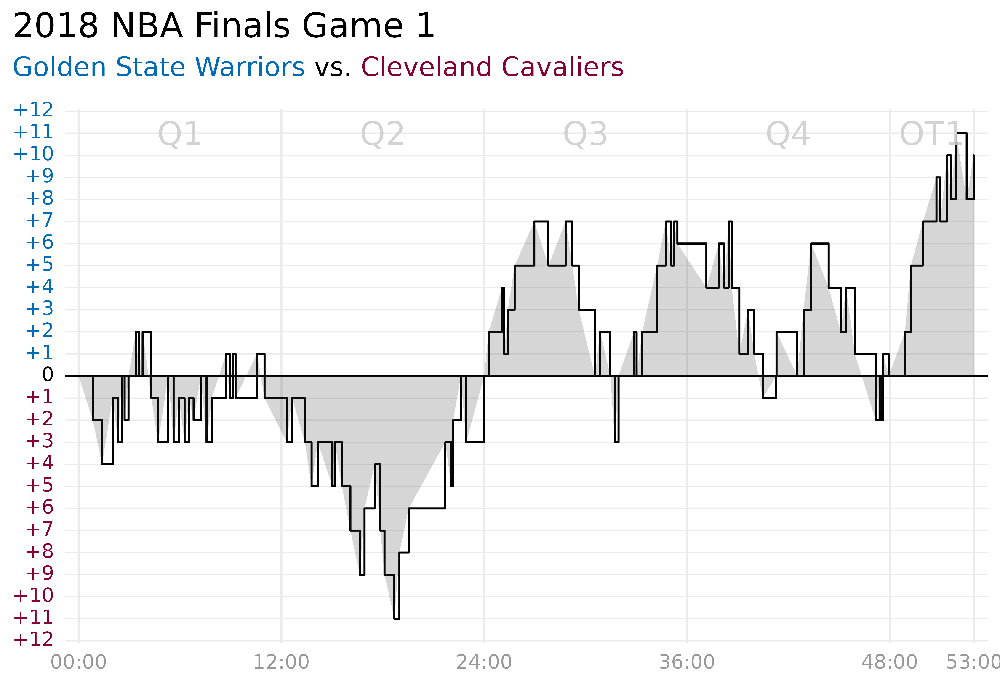
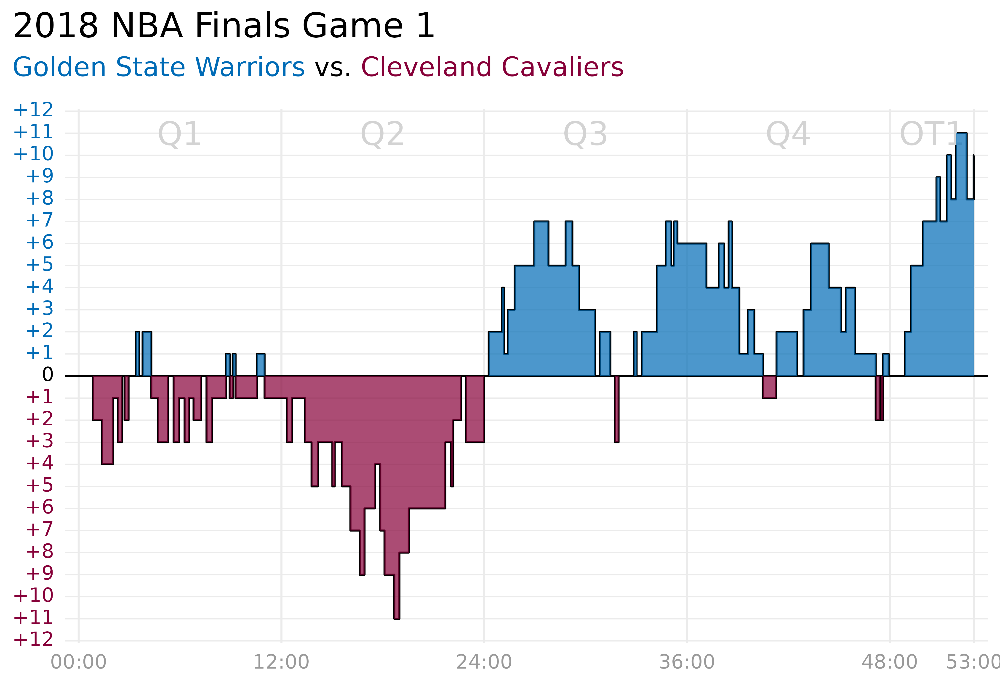

This article demonstrates how to use geom_braid() with
method = 'step' to fill the area between two alternating
steps drawn with geom_step().
Let’s take a look at the points scored during a professional basketball game.
Getting Started
ggbraid provides a data frame called hoops with the
points scored throughout the course of Game 1 of the 2018 National
Basketball Association (NBA) Finals between the Golden State Warriors
and the Cleveland Cavaliers.
library(ggplot2)
library(ggbraid)
library(ggtext) # element_markdown()
library(dplyr)
library(tidyr)
library(glue) # glue()
library(hms) # as_hms()
data(hoops)
hoops
#> # A tibble: 129 × 3
#> time team points
#> <time> <chr> <dbl>
#> 1 00'00" CLE 0
#> 2 00'00" GSW 0
#> 3 00'50" CLE 2
#> 4 01'23" CLE 2
#> 5 02'01" GSW 3
#> 6 02'20" CLE 2
#> 7 02'33" GSW 2
#> 8 02'33" GSW 1
#> 9 02'43" CLE 1
#> 10 02'43" CLE 1
#> # … with 119 more rowstime is game time in MM'SS" format,
team is the team responsible for scoring, Golden State
Warriors (GSW) or Cleveland Cavaliers (CLE),
and points is the number of points scored, either 1, 2, or
3 (or 0, simply marking the start and end of the game).
Cumulative Score
Let’s transform hoops into hoops_score with
the cumulative score for each team over time.
hoops_score <- hoops %>%
group_by(team) %>%
mutate(score = cumsum(points)) %>%
ungroup()
hoops_score
#> # A tibble: 129 × 4
#> time team points score
#> <time> <chr> <dbl> <dbl>
#> 1 00'00" CLE 0 0
#> 2 00'00" GSW 0 0
#> 3 00'50" CLE 2 2
#> 4 01'23" CLE 2 4
#> 5 02'01" GSW 3 3
#> 6 02'20" CLE 2 6
#> 7 02'33" GSW 2 5
#> 8 02'33" GSW 1 6
#> 9 02'43" CLE 1 7
#> 10 02'43" CLE 1 8
#> # … with 119 more rowsNow plot the cumulative scores with ggplot() and
geom_step().1
Not bad.
But come to think of it, there is not a compelling reason to show cumulative score — there are no negative points in basketball so the cumulative score always goes up and to the right. Displaying the data this way does not add any value.
What we really care about is the score margin, the difference in score between GSW and CLE at any point during the game.
Score Margin
Transform hoops into hoops_wide with
cle as the cumulative score of the Cavaliers,
gsw as the cumulative score of the Warriors, and
diff as the difference between them
(gsw - cle).
hoops_wide <- hoops %>%
group_by(time, team) %>%
summarize(points = sum(points), .groups = "drop") %>%
pivot_wider(names_from = team, values_from = points) %>%
rename_with(tolower) %>%
replace_na(list(cle = 0, gsw = 0)) %>%
mutate(
cle = cumsum(cle),
gsw = cumsum(gsw),
diff = gsw - cle
)
hoops_wide
#> # A tibble: 108 × 4
#> time cle gsw diff
#> <time> <dbl> <dbl> <dbl>
#> 1 00'00" 0 0 0
#> 2 00'50" 2 0 -2
#> 3 01'23" 4 0 -4
#> 4 02'01" 4 3 -1
#> 5 02'20" 6 3 -3
#> 6 02'33" 6 6 0
#> 7 02'43" 8 6 -2
#> 8 02'57" 8 8 0
#> 9 03'23" 8 10 2
#> 10 03'35" 10 10 0
#> # … with 98 more rowsNow plot hoops_wide and add a horizontal line at 0
indicating a tied game.
ggplot(hoops_wide) +
geom_step(aes(x = time, y = diff)) +
geom_hline(yintercept = 0)Better!
Let’s improve the aesthetics and add details that make it more clear what’s going on.
gsw_color <- "#006BB6"
cle_color <- "#860038"
p <- ggplot(hoops_wide) +
geom_step(aes(x = time, y = diff)) +
geom_hline(yintercept = 0) +
scale_x_time(
breaks = as_hms(c("00:00:00", "00:12:00", "00:24:00", "00:36:00", "00:48:00", "00:53:00")),
labels = c("00:00", "12:00", "24:00", "36:00", "48:00", "53:00"),
expand = c(0.015, -0.015)
) +
scale_y_continuous(
breaks = seq(-12, 12, by = 1),
labels = c(
glue("<span style='color:{cle_color}'>+{12:1}</span>"),
"<span style='color:black'>0</span>",
glue("<span style='color:{gsw_color}'>+{1:12}</span>")
)
) +
scale_fill_manual(values = c(cle_color, gsw_color)) +
guides(fill = "none") +
annotate("text", x = as_hms("00:06:00"), y = 11, label = "Q1", size = 6, color = "lightgrey") +
annotate("text", x = as_hms("00:18:00"), y = 11, label = "Q2", size = 6, color = "lightgrey") +
annotate("text", x = as_hms("00:30:00"), y = 11, label = "Q3", size = 6, color = "lightgrey") +
annotate("text", x = as_hms("00:42:00"), y = 11, label = "Q4", size = 6, color = "lightgrey") +
annotate("text", x = as_hms("00:50:30"), y = 11, label = "OT1", size = 6, color = "lightgrey") +
labs(
title = "2018 NBA Finals Game 1",
subtitle = glue("<span style='color:{gsw_color};'>Golden State Warriors</span> vs. <span style='color:{cle_color}'>Cleveland Cavaliers</span>"),
y = NULL,
x = NULL
) +
theme_minimal(base_size = 13) +
theme(
plot.title = element_markdown(size = 18),
plot.title.position = "plot",
plot.subtitle = element_markdown(size = 14, margin = margin(b = 1, unit = "line")),
axis.text.y = element_markdown(),
axis.text.x = element_text(color = "grey60"),
panel.grid.major.x = element_line(size = 0.5),
panel.grid.major.y = element_line(size = 0.3),
panel.grid.minor.x = element_blank(),
panel.grid.minor.y = element_blank()
)#> ‚Ä©[1m‚Ä©[22mThe size argument of
element_line() is deprecated as of ggplot2 3.4.0. #>
‚Ä©[36m‚Ñπ‚Ä©[39m Please use the linewidth argument instead.
p
With the data displayed this way, it’s easy to see how the game progressed.
After an initial struggle in Q1, the Cavaliers took an early lead in Q2 only to have the Warriors claw it all back to even the score at halftime. In Q3, the Warriors claimed the lead, then lost it, and reclaimed it. And in Q4, the Cavaliers again evened the score, ending the game with a tie and sending the teams into a 5-minute overtime (OT1). The Warriors quickly gained the upper hand in overtime and won the game by 10 points.
Braiding Steps
As an additional detail, suppose we want to fill the region between the score margin steps and the horizontal line at 0.
Maybe we can use geom_ribbon() to do this?
p +
geom_ribbon(
aes(x = time, ymin = diff, ymax = 0),
alpha = 0.2
)
Hmm, that didn’t work.
geom_ribbon() cannot draw a ribbon between series drawn
with geom_step() — at least, not without a little help. The
ggalt package provides a
stat_stepribbon() function that geom_ribbon()
can use to draw “step ribbons.”
ggbraid offers similar functionality. Simply replace
geom_ribbon() with geom_braid() and set
method = "step".
p +
geom_braid(
aes(x = time, ymin = diff, ymax = 0),
method = "step",
alpha = 0.2
)While we’re at it, why don’t we color the ribbon differently depending on the team that is winning?
p +
geom_braid(
aes(x = time, ymin = diff, ymax = 0, fill = diff > 0),
method = "step",
alpha = 0.7
)
üòéüèÄ